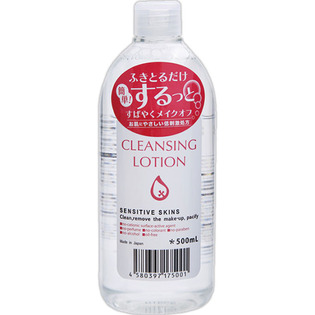

返回列表
产品名称：ピュアヴィヴィ クレンジングローション

イヴ ピュアヴィヴィ クレンジングローション ５００ＭＬ
メーカー イヴ
JANコード 4580397175001
商品の特徴
ふきとるだけ 簡単！するっと すばやくメイクオフ
- 成分・分量
- ＜全成分＞
水、PEG-8（カプリル酸／カプリン酸）グリセリズ、BG、アロエベラ葉エキス、グリコシルトレハロース、加水分解水添デンプン、ヒアルロン酸Na、グレープフルーツ果実エキス、サンザシエキス、ナツメ果実エキス、リンゴ果実エキス、ライム果汁、オレンジ果汁、レモン果汁、ハトムギ種子エキス、エチルヘキシルグリセリン、グルタミン酸ジ酢酸4Na、乳酸、クエン酸Na、クエン酸、キシリトール、グリコール酸Na、フェノキシエタノル
- 用法及び用量
- コットンにたっぷりと含ませ、アイメイクやファンデーションとよくなじませた後、やさしくふき取ります。乾いた状態のお肌にお使いください。そのまま洗い流さずにスキンケアの次のステップにお進みいただけます。使用後はお好みにより、洗顔料でダブル洗顔をしてください。